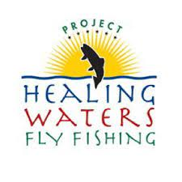

Resources

Backcountry Hunters & Anglers Armed Force Initiative
BHA does a great job of advocating for public land access. I was lucky enough to join fellow veterans or a fishing trip to Montana hosted by the Armed Forces Initiative.

Project Healing Waters Fly Fishing
PHWFF is a program that introduces veterans to both fly fishing and fly tying as a form of therapy. I use fly tying as a way to relax and have learned so much from my mentors in the program.
Cognitive Processing Therapy for PTSD
Witht the help of my therapist at the Vet Center I went through CPT almost two years ago. It is a very effective treatment for PTSD and provided me with many tools that have improved my life daily.